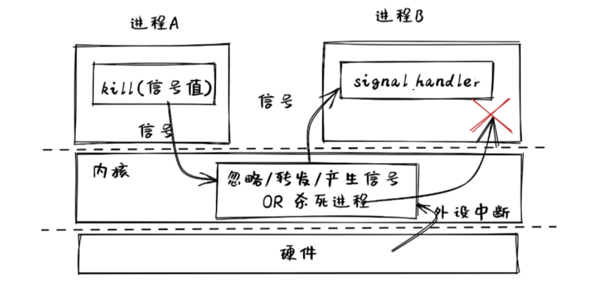
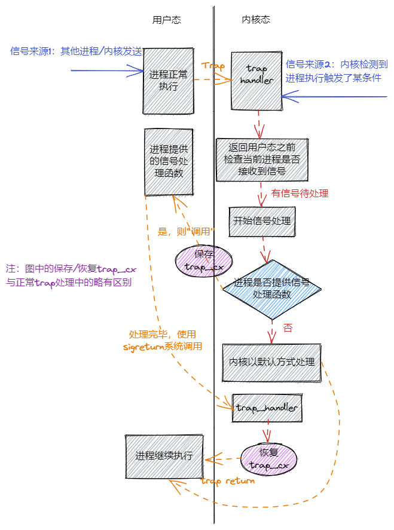

信号#
本节导读#
在本节之前的 IPC 机制主要集中在进程间的数据传输和数据交换方面，这需要两个进程之间相互合作，同步地来实现。比如，一个进程发出 read 系统调用，另外一个进程需要发出对应的 write 系统调用，这样两个进程才能协同完成基于 pipe 机制的数据传输。这种双向协作的方式不太适合单向的事件通知机制。
在进程间还存在“事件通知”的需求：操作系统或某进程希望能单方面通知另外一个正在忙其它事情的进程产生了某个事件，并让这个进程能迅速响应。如果采用之前同步的 IPC 机制，难以高效地应对这样的需求。比如，用户想中断当前正在运行的一个程序，于是他敲击 Ctrl-C 的组合键，正在运行的程序会迅速退出它正在做的任何事情，截止程序的执行。
{kind=link}
我们需要有一种类似于硬件中断的软件级异步通知机制，使得进程在接收到特定事件的时候能够暂停当前的工作并及时响应事件，并在响应事件之后可以恢复当前工作继续执行。如果进程没有接收到任何事件，它可以执行自己的任务。这里的暂停与恢复的工作，都由操作系统来完成，应用程序只需设置好响应某事件的事件处理例程就够了。这在很大程度上简化了应用程序响应事件的开发工作。这些需求和想法推动了 信号 (Signal) 机制的产生。
信号机制简介#
信号（Signals）是类 UNIX 操作系统中实现进程间通信的一种异步通知机制，用来提醒某进程一个特定事件已经发生，需要及时处理。当一个信号发送给一个进程时，操作系统会中断接收到信号的进程的正常执行流程并对信号进行处理。如果该进程定义了信号的处理函数，那么这个处理函数会被调用，否则就执行默认的处理行为，比如让该进程退出。在处理完信号之后，如果进程还没有退出，则会恢复并继续进程的正常执行。
如果将信号与硬件中断进行比较，我们可以把信号描述为软件中断。当硬件发出中断后，中断响应的对象是操作系统，并由操作系统预设的中断处理例程来具体地进行中断的响应和处理；对于信号来说，当某进程或操作系统发出信号时，会指定信号响应的对象，即某个进程的 pid ，并由该进程预设的信号处理例程来进行具体的信号响应。
进程间发送的信号是某种事件，为了简单起见，UNIX 采用了整数来对信号进行编号，这些整数编号都定义了对应的信号的宏名，宏名都是以 SIG 开头，比如SIGABRT, SIGKILL, SIGSTOP, SIGCONT。
信号的发送方可以是进程或操作系统内核：进程可以通过系统调用 kill 给其它进程发信号；内核在碰到特定事件，比如用户对当前进程按下 Ctrl+C 按键时，内核会收到包含 Ctrl+C 按键的外设中断和按键信息，随后会向正在运行的当前进程发送 SIGINT 信号，将其终止。
信号的接收方是一个进程，接收到信号有多种处理方式，最常见的三种如下：
忽略：就像信号没有发生过一样。
捕获：进程会调用相应的处理函数进行处理。
终止：终止进程。
如果应用没有手动设置接收到某种信号之后如何处理，则操作系统内核会以默认方式处理该信号，一般是终止收到信号的进程或者忽略此信号。每种信号都有自己的默认处理方式。
注解
Linux 有哪些信号？
Linux 中有 62 个信号，每个信号代表着某种事件，一般情况下，当进程收到某个信号时，意味着该信号所代表的事件发生了。下面列出了一些常见的信号。
信号 |
含义 |
|---|---|
SIGABRT |
非正常的进程退出，可能由调用 |
SIGCHLD |
进程状态变更时（通常是进程退出时），由内核发送给它的父进程 |
SIGINT |
在终端界面按下 |
SIGKILL |
终止某个进程，由内核或其他进程发送给被终止进程 |
SIGSEGV |
非法内存访问异常，由内核发送给触发异常的进程 |
SIGILL |
非法指令异常，由内核发送给触发异常的进程 |
SIGTSTP |
在终端界面按下 |
SIGSTOP |
也用于暂停进程，与 |
SIGCONT |
恢复暂停的进程继续执行 |
SIGUSR1/2 |
用户自定义信号 1/2 |
和之前介绍过的硬件中断一样，信号作为软件中断也可以分成同步和异步两种，这里的同步/异步指的是信号的触发同步/异步于接收到信号进程的执行。比如 SIGILL 和 SIGSEGV 就属于同步信号，而 SIGCHLD 和 SIGINT 就属于异步信号。
信号处理流程#
信号的处理流程如下图所示：
{kind=link}
信号有两种来源：最开始的时候进程在正常执行，此时可能内核或者其他进程给它发送了一个信号，这些就属于异步信号，是信号的第一种来源；信号的第二种来源则是由进程自身的执行触发，在处理 Trap 的时候内核会将相应的信号直接附加到进程控制块中，这种属于同步信号。
内核会在 Trap 处理完成即将返回用户态之前检查要返回到的进程是否还有信号待处理。如果需要处理的话，取决于进程是否提供该种信号的处理函数，有两种处理方法：
如果进程通过下面介绍的
sigaction系统调用提供了相应信号的处理函数，那么内核会将该进程 Trap 进来时留下的 Trap 上下文保存在另一个地方，并回到用户态执行进程提供的处理函数。内核要求处理函数的编写者在函数的末尾手动进行另一个sigreturn系统调用，表明处理结束并请求恢复进程原来的执行。内核将处理该系统调用并恢复之前保存的 Trap 上下文，等到再次回到用户态的时候，便会继续进程在处理信号之前的执行。反之，如果进程未提供处理函数，这是一种比较简单的情况。此时，内核会直接默认的方式处理信号。之后便会回到用户态继续进程原先的执行。
信号机制系统调用原型#
发送信号#
为了与其他进程进行通信，一个进程可以使用 kill 系统调用发送信号给另一个进程：
// user/src/lib.rs
/// 功能：当前进程向另一个进程（可以是自身）发送一个信号。
/// 参数：pid 表示接受信号的进程的进程 ID, signum 表示要发送的信号的编号。
/// 返回值：如果传入参数不正确（比如指定进程或信号类型不存在）则返回 -1 ,否则返回 0 。
/// syscall ID: 129
pub fn kill(pid: usize, signum: i32) -> isize;
我们的内核中各信号的编号定义如下：
// user/src/lib.rs
pub const SIGDEF: i32 = 0; // Default signal handling
pub const SIGHUP: i32 = 1;
pub const SIGINT: i32 = 2;
pub const SIGQUIT: i32 = 3;
pub const SIGILL: i32 = 4;
pub const SIGTRAP: i32 = 5;
pub const SIGABRT: i32 = 6;
pub const SIGBUS: i32 = 7;
pub const SIGFPE: i32 = 8;
pub const SIGKILL: i32 = 9;
...
从中可以看出，每次调用 kill 只能发送一个类型的信号。
处理信号#
与信号处理相关的系统调用则有三个：
sys_sigaction:设置信号处理例程sys_procmask:设置进程的信号屏蔽掩码sys_sigreturn:清除栈帧，从信号处理例程返回
下面依次对它们进行说明。
首先，进程可以通过 sigaction 系统调用捕获某种信号，即：当接收到某种信号的时候，暂停进程当前的执行，调用进程为该种信号提供的函数对信号进行处理，处理完成之后再恢复进程原先的执行。 sigaction 的接口如下：
// os/src/syscall/process.rs
/// 功能：为当前进程设置某种信号的处理函数，同时保存设置之前的处理函数。
/// 参数：signum 表示信号的编号，action 表示要设置成的处理函数的指针
/// old_action 表示用于保存设置之前的处理函数的指针（SignalAction 结构稍后介绍）。
/// 返回值：如果传入参数错误（比如传入的 action 或 old_action 为空指针或者）
/// 信号类型不存在返回 -1 ，否则返回 0 。
/// syscall ID: 134
pub fn sys_sigaction(
signum: i32,
action: *const SignalAction,
old_action: *mut SignalAction,
) -> isize;
为了让编写应用更加方便，用户库 user_lib 中的接口略有不同：
// user/src/lib.rs
pub fn sigaction(
signum: i32,
action: Option<&SignalAction>,
old_action: Option<&mut SignalAction>,
) -> isize;
注意这里参数 action 和 old_action 使用引用而非裸指针，且有一层 Option 包裹，这样能减少对于不安全的裸指针的使用。在传参的时候，如果传递实际存在的引用则使用 Some 包裹，而用 None 来代替空指针，这样可以提前对引用和空指针做出区分。在具体实现的时候，再将 None 转换为空指针：
// user/src/lib.rs
pub fn sigaction(
signum: i32,
action: Option<&SignalAction>,
old_action: Option<&mut SignalAction>,
) -> isize {
sys_sigaction(
signum,
action.map_or(core::ptr::null(), |a| a),
old_action.map_or(core::ptr::null_mut(), |a| a)
)
}
接下来介绍 SignalAction 数据结构。方便起见，我们将其对齐到 16 字节使得它不会跨虚拟页面：
// user/src/lib.rs
/// Action for a signal
#[repr(C, align(16))]
#[derive(Debug, Clone, Copy)]
pub struct SignalAction {
pub handler: usize,
pub mask: SignalFlags,
}
可以看到它有两个字段： handler 表示信号处理例程的入口地址； mask 则表示执行该信号处理例程期间的信号掩码。这个信号掩码是用于在执行信号处理例程的期间屏蔽掉一些信号，每个 handler 都可以设置它在执行期间屏蔽掉哪些信号。“屏蔽”的意思是指在执行该信号处理例程期间，即使 Trap 到内核态发现当前进程又接收到了一些信号，只要这些信号被屏蔽，内核就不会对这些信号进行处理而是直接回到用户态继续执行信号处理例程。但这不意味着这些被屏蔽的信号就此被忽略，它们仍被记录在进程控制块中，当信号处理例程执行结束之后它们便不再被屏蔽，从而后续可能被处理。
mask 作为一个掩码可以代表屏蔽掉一组信号，因此它的类型 SignalFlags 是一个信号集合：
// user/src/lib.rs
bitflags! {
pub struct SignalFlags: i32 {
const SIGDEF = 1; // Default signal handling
const SIGHUP = 1 << 1;
const SIGINT = 1 << 2;
const SIGQUIT = 1 << 3;
const SIGILL = 1 << 4;
const SIGTRAP = 1 << 5;
...
const SIGSYS = 1 << 31;
}
}
需要注意的是，我们目前的实现比较简单，暂时不支持信号嵌套，也就是在执行一个信号处理例程期间再去执行另一个信号处理例程。
sigaction 可以设置某个信号处理例程的信号掩码，而 sigprocmask 是设置这个进程的全局信号掩码：
// user/src/lib.rs
/// 功能：设置当前进程的全局信号掩码。
/// 参数：mask 表示当前进程要设置成的全局信号掩码，代表一个信号集合，
/// 在集合中的信号始终被该进程屏蔽。
/// 返回值：如果传入参数错误返回 -1 ，否则返回之前的信号掩码 。
/// syscall ID: 135
pub fn sigprocmask(mask: u32) -> isize;
最后一个系统调用是 sigreturn 。介绍信号处理流程的时候提到过，在进程向内核提供的信号处理例程末尾，函数的编写者需要手动插入一个 sigreturn 系统调用来通知内核信号处理过程结束，可以恢复进程先前的执行。它的接口如下：
// user/src/lib.rs
/// 功能：进程通知内核信号处理例程退出，可以恢复原先的进程执行。
/// 返回值：如果出错返回 -1，否则返回 0 。
/// syscall ID: 139
pub fn sigreturn() -> isize;
信号系统调用使用示例#
我们来从简单的信号例子 sig_simple 中介绍如何使用信号机制：
1// user/src/bin/sig_simple.rs
2
3#![no_std]
4#![no_main]
5
6extern crate user_lib;
7
8// use user_lib::{sigaction, sigprocmask, SignalAction, SignalFlags, fork, exit, wait, kill, getpid, sleep, sigreturn};
9use user_lib::*;
10
11fn func() {
12 println!("user_sig_test passed");
13 sigreturn();
14}
15
16#[no_mangle]
17pub fn main() -> i32 {
18 let mut new = SignalAction::default();
19 let mut old = SignalAction::default();
20 new.handler = func as usize;
21
22 println!("signal_simple: sigaction");
23 if sigaction(SIGUSR1, Some(&new), Some(&mut old)) < 0 {
24 panic!("Sigaction failed!");
25 }
26 println!("signal_simple: kill");
27 if kill(getpid() as usize, SIGUSR1) < 0 {
28 println!("Kill failed!");
29 exit(1);
30 }
31 println!("signal_simple: Done");
32 0
33}
在此进程中：
在第 18~20 行，首先建立了
new和old两个SignalAction结构的变量，并设置new.handler为信号处理例程func的地址。然后在第 23 行，调用
sigaction函数，提取new结构中的信息设置当前进程收到SIGUSR1信号之后的处理方式，其效果是该进程在收到SIGUSR1信号后，会执行func函数来具体处理响应此信号。接着在第 27 行，通过
getpid函数获得自己的 pid，并以自己的 pid 和SIGUSR1为参数，调用kill函数，给自己发SIGUSR1信号。
执行这个应用，可以看到下面的输出：
>> sig_simple
signal_simple: sigaction
signal_simple: kill
user_sig_test passed
signal_simple: Done
可以看出，看到进程在收到自己给自己发送的 SIGUSR1 信号之后，内核调用它作为信号处理例程的 func 函数并打印出了标志性输出。在信号处理例程结束之后，还能够看到含有 Done 的输出，这意味着进程原先的执行被正确恢复。
设计与实现信号机制#
我们将信号机制的实现划分为两部分：
一是进程通过
sigaction系统调用设置信号处理例程和通过sigprocmask设置进程全局信号掩码。这些操作只需简单修改进程控制块中新增的相关数据结构即可，比较简单。二是如何向进程发送信号、进程如何接收信号、而信号又如何被处理，这些操作需要结合到本书前面的章节介绍的对于 Trap 处理流程，因此会比较复杂。
设置信号处理例程和信号掩码#
为了实现进程设置信号处理例程和信号掩码的功能，我们需要在进程控制块 TaskControlBlock 中新增以下数据结构（这些数据结构在进程创建之后可能被修改，因此将它们放置在内部可变的 inner 中）：
// os/src/task/task.rs
pub struct TaskControlBlockInner {
...
pub signal_mask: SignalFlags,
pub signal_actions: SignalActions,
...
}
其中， signal_mask 表示进程的全局信号掩码，其类型 SignalFlags 与用户库 user_lib 中的相同，表示一个信号集合。在 signal_mask 这个信号集合内的信号将被该进程全局屏蔽。
进程可以通过 sigprocmask 系统调用直接设置自身的全局信号掩码：
// os/src/process.rs
pub fn sys_sigprocmask(mask: u32) -> isize {
if let Some(task) = current_task() {
let mut inner = task.inner_exclusive_access();
let old_mask = inner.signal_mask;
if let Some(flag) = SignalFlags::from_bits(mask) {
inner.signal_mask = flag;
old_mask.bits() as isize
} else {
-1
}
} else {
-1
}
}
进程控制块中的 signal_actions 的类型是 SignalActions ，是一个 SignalAction （同样与 user_lib 中的定义相同）的定长数组，其中每一项都记录进程如何响应对应的信号：
// os/src/task/signal.rs
pub const MAX_SIG: usize = 31;
// os/src/task/action.rs
#[derive(Clone)]
pub struct SignalActions {
pub table: [SignalAction; MAX_SIG + 1],
}
于是，在 sigaction 系统调用的时候我们只需要更新当前进程控制块的 signal_actions 即可：
1// os/src/syscall/process.rs
2
3fn check_sigaction_error(signal: SignalFlags, action: usize, old_action: usize) -> bool {
4 if action == 0
5 || old_action == 0
6 || signal == SignalFlags::SIGKILL
7 || signal == SignalFlags::SIGSTOP
8 {
9 true
10 } else {
11 false
12 }
13}
14
15pub fn sys_sigaction(
16 signum: i32,
17 action: *const SignalAction,
18 old_action: *mut SignalAction,
19) -> isize {
20 let token = current_user_token();
21 let task = current_task().unwrap();
22 let mut inner = task.inner_exclusive_access();
23 if signum as usize > MAX_SIG {
24 return -1;
25 }
26 if let Some(flag) = SignalFlags::from_bits(1 << signum) {
27 if check_sigaction_error(flag, action as usize, old_action as usize) {
28 return -1;
29 }
30 let prev_action = inner.signal_actions.table[signum as usize];
31 *translated_refmut(token, old_action) = prev_action;
32 inner.signal_actions.table[signum as usize] = *translated_ref(token, action);
33 0
34 } else {
35 -1
36 }
37}
其中：
check_sigaction_error用来检查sigaction的参数是否有错误（有错误的话返回 true）。这里的检查比较简单，如果传入的action或者old_action为空指针则视为错误。另一种错误则是信号类型为SIGKILL或者SIGSTOP，这是因为我们的内核参考 Linux 内核规定不允许进程对这两种信号设置信号处理例程，而只能由内核对它们进行处理。sys_sigaction首先会调用check_sigactio_error进行检查，如果没有错误的话，则会使用translated_ref(mut)将进程提交的信号处理例程保存到进程控制块，随后将此前的处理例程保存到进程中的指定位置。注意使用translated_ref(mut)的前提是类型T不会跨页，我们通过设置SignalAction对齐到 16 字节来保证这一点。
信号的产生#
信号的产生有以下几种方式：
进程通过
kill系统调用给自己或者其他进程发送信号。内核检测到某些事件给某个进程发送信号，但这个事件与接收信号的进程的执行无关。典型的例子如：
SIGCHLD当子进程的状态改变后由内核发送给父进程。可以看出这可以用来实现更加灵活的进程管理，但我们的内核为了简单目前并没有实现SIGCHLD这类信号。前两种属于异步信号，最后一种则属于同步信号：即进程执行的时候触发了某些条件，于是在 Trap 到内核处理的时候，内核给该进程发送相应的信号。比较常见的例子是进程执行的时候出错，比如段错误
SIGSEGV和非法指令异常SIGILL。
首先来看 kill 系统调用的实现：
// os/src/task/task.rs
pub struct TaskControlBlockInner {
...
pub signals: SignalFlags,
...
}
// os/src/syscall/process.rs
pub fn sys_kill(pid: usize, signum: i32) -> isize {
if let Some(task) = pid2task(pid) {
if let Some(flag) = SignalFlags::from_bits(1 << signum) {
// insert the signal if legal
let mut task_ref = task.inner_exclusive_access();
if task_ref.signals.contains(flag) {
return -1;
}
task_ref.signals.insert(flag);
0
} else {
-1
}
} else {
-1
}
}
这需要在进程控制块的可变部分中新增一个 signals 字段记录对应进程目前已经收到了哪些信号尚未处理，它的类型同样是 SignalFlags 表示一个信号集合。 sys_kill 的实现也比较简单：就是调用 pid2task 得到传入进程 ID 对应的进程控制块，然后把要发送的信号插入到 signals 字段中。
然后是进程执行出错的情况（比如访存错误或非法指令异常），这会 Trap 到内核并在 trap_handler 中由内核将对应信号发送到当前进程：
// os/src/trap/mod.rs
#[no_mangle]
pub fn trap_handler() -> ! {
...
match scause.cause() {
...
Trap::Exception(Exception::StoreFault)
| Trap::Exception(Exception::StorePageFault)
| Trap::Exception(Exception::InstructionFault)
| Trap::Exception(Exception::InstructionPageFault)
| Trap::Exception(Exception::LoadFault)
| Trap::Exception(Exception::LoadPageFault) => {
/*
println!(
"[kernel] {:?} in application, bad addr = {:#x}, bad instruction = {:#x}, kernel killed it.",
scause.cause(),
stval,
current_trap_cx().sepc,
);
*/
current_add_signal(SignalFlags::SIGSEGV);
}
Trap::Exception(Exception::IllegalInstruction) => {
current_add_signal(SignalFlags::SIGILL);
...
}
...
}
// os/src/task/mod.rs
pub fn current_add_signal(signal: SignalFlags) {
let task = current_task().unwrap();
let mut task_inner = task.inner_exclusive_access();
task_inner.signals |= signal;
}
信号的处理#
在 trap_handler 完成 Trap 处理并返回用户态之前，会调用 handle_signals 函数处理当前进程此前接收到的信号：
// os/src/task/task.rs
pub struct TaskControlBlockInner {
...
pub killed: bool,
pub frozen: bool,
...
}
// os/src/task/mod.rs
pub fn handle_signals() {
loop {
check_pending_signals();
let (frozen, killed) = {
let task = current_task().unwrap();
let task_inner = task.inner_exclusive_access();
(task_inner.frozen, task_inner.killed)
};
if !frozen || killed {
break;
}
suspend_current_and_run_next();
}
}
可以看到 handle_signals 是一个无限循环，真正处理信号的逻辑在 check_pending_signals 函数中。这样做是为了处理 SIGSTOP 和 SIGCONT 这一对信号：当进程收到 SIGSTOP 信号之后，它的执行将被暂停，等到该进程收到 SIGCONT 信号之后再继续执行。我们在进程控制块中新增 frozen 字段表示进程目前是否已收到 SIGSTOP 信号被暂停，而 killed 字段表示进程是否已被杀死。这个循环的意义在于：只要进程还处于暂停且未被杀死的状态就会停留在循环中等待 SIGCONT 信号的到来。如果 frozen 为真，证明还没有收到 SIGCONT 信号，进程仍处于暂停状态，循环的末尾我们调用 suspend_current_and_run_next 函数切换到其他进程期待其他进程将 SIGCONT 信号发过来。
check_pending_signals 会检查收到的信号并对它们进行处理，在这个过程中会更新上面的 frozen 和 killed 字段：
1// os/src/task/mod.rs
2
3fn check_pending_signals() {
4 for sig in 0..(MAX_SIG + 1) {
5 let task = current_task().unwrap();
6 let task_inner = task.inner_exclusive_access();
7 let signal = SignalFlags::from_bits(1 << sig).unwrap();
8 if task_inner.signals.contains(signal) && (!task_inner.signal_mask.contains(signal)) {
9 let mut masked = true;
10 let handling_sig = task_inner.handling_sig;
11 if handling_sig == -1 {
12 masked = false;
13 } else {
14 let handling_sig = handling_sig as usize;
15 if !task_inner.signal_actions.table[handling_sig]
16 .mask
17 .contains(signal)
18 {
19 masked = false;
20 }
21 }
22 if !masked {
23 drop(task_inner);
24 drop(task);
25 if signal == SignalFlags::SIGKILL
26 || signal == SignalFlags::SIGSTOP
27 || signal == SignalFlags::SIGCONT
28 || signal == SignalFlags::SIGDEF
29 {
30 // signal is a kernel signal
31 call_kernel_signal_handler(signal);
32 } else {
33 // signal is a user signal
34 call_user_signal_handler(sig, signal);
35 return;
36 }
37 }
38 }
39 }
40}
第 4 行的最外层循环遍历所有信号；
第 8 行检查当前进程是否接收到了遍历到的信号（条件 1）以及该信号是否未被当前进程全局屏蔽（条件 2）；
第 9 ~ 21 行检查该信号是否未被当前正在执行的信号处理例程屏蔽（条件 3）；
当 3 个条件全部满足的时候，则在第 23 ~ 36 行开始处理该信号。目前的设计是：如果信号类型为
SIGKILL/SIGSTOP/SIGCONT/SIGDEF四者之一，则该信号只能由内核来处理，调用call_kernel_signal_handler函数来处理；否则调用call_user_signal_handler函数尝试使用进程提供的信号处理例程来处理。
// os/src/task/task.rs
pub struct TaskControlBlockInner {
...
pub handling_sig: isize,
pub trap_ctx_backup: Option<TrapContext>,
...
}
// os/src/task/mod.rs
fn call_kernel_signal_handler(signal: SignalFlags) {
let task = current_task().unwrap();
let mut task_inner = task.inner_exclusive_access();
match signal {
SignalFlags::SIGSTOP => {
task_inner.frozen = true;
task_inner.signals ^= SignalFlags::SIGSTOP;
}
SignalFlags::SIGCONT => {
if task_inner.signals.contains(SignalFlags::SIGCONT) {
task_inner.signals ^= SignalFlags::SIGCONT;
task_inner.frozen = false;
}
}
_ => {
// println!(
// "[K] call_kernel_signal_handler:: current task sigflag {:?}",
// task_inner.signals
// );
task_inner.killed = true;
}
}
}
fn call_user_signal_handler(sig: usize, signal: SignalFlags) {
let task = current_task().unwrap();
let mut task_inner = task.inner_exclusive_access();
let handler = task_inner.signal_actions.table[sig].handler;
if handler != 0 {
// user handler
// handle flag
task_inner.handling_sig = sig as isize;
task_inner.signals ^= signal;
// backup trapframe
let mut trap_ctx = task_inner.get_trap_cx();
task_inner.trap_ctx_backup = Some(*trap_ctx);
// modify trapframe
trap_ctx.sepc = handler;
// put args (a0)
trap_ctx.x[10] = sig;
} else {
// default action
println!("[K] task/call_user_signal_handler: default action: ignore it or kill process");
}
}
call_kernel_signal_handler对于SIGSTOP和SIGCONT特殊处理：清除掉接收到的信号避免它们再次被处理，然后更新frozen字段；对于其他的信号都按照默认的处理方式即杀死当前进程，于是将killed字段设置为真，这样的进程会在 Trap 返回用户态之前就通过调度切换到其他进程。在实现
call_user_signal_handler之前，还需在进程控制块中新增两个字段：handling_sig表示进程正在执行哪个信号的处理例程；trap_ctx_backup则表示进程执行信号处理例程之前的 Trap 上下文。因为我们要 Trap 回到用户态执行信号处理例程，原来的 Trap 上下文会被覆盖，所以我们将其保存在进程控制块中。call_user_signal_handler首先检查进程是否提供了该信号的处理例程，如果没有提供的话直接忽略该信号。否则就调用信号处理例程：除了更新handling_sig和signals之外，还将当前的 Trap 上下文保存在trap_ctx_backup中。然后修改 Trap 上下文的sepc到应用设置的例程地址使得 Trap 回到用户态之后就会跳转到例程入口并开始执行。注意我们并没有修改 Trap 上下文中的sp，这意味着例程还会在原先的用户栈上执行。这是为了实现方便，在 Linux 的实现中，内核会为每次例程的执行重新分配一个用户栈。最后，我们修改 Trap 上下文的a0寄存器，使得信号类型能够作为参数被例程接收。
回到 handle_signals ，从 handle_signals 退出之后会回到 trap_handler 中，这里在回到用户态之前会检查当前进程是否出错并可以退出：
// os/src/trap/mod.rs
#[no_mangle]
pub fn trap_handler() -> ! {
...
handle_signals();
// check error signals (if error then exit)
if let Some((errno, msg)) = check_signals_error_of_current() {
println!("[kernel] {}", msg);
exit_current_and_run_next(errno);
}
trap_return();
}
这里的错误涵盖了 SIGINT/SIGSEGV/SIGILL 等，可以看 check_signals_error_of_current 的实现。出错之后会直接打印信息并调用 exit_current_and_run_next 退出当前进程并进行调度。
最后还需要补充 sigreturn 的实现。在信号处理例程的结尾需要插入这个系统调用来结束信号处理并继续进程原来的执行：
1// os/src/syscall/process.rs
2
3pub fn sys_sigreturn() -> isize {
4 if let Some(task) = current_task() {
5 let mut inner = task.inner_exclusive_access();
6 inner.handling_sig = -1;
7 // restore the trap context
8 let trap_ctx = inner.get_trap_cx();
9 *trap_ctx = inner.trap_ctx_backup.unwrap();
10 trap_ctx.x[10] as isize
11 } else {
12 -1
13 }
14}
这里只是将进程控制块中保存的记录了处理信号之前的进程上下文的 trap_ctx_backup 覆盖到当前的 Trap 上下文。这样接下来 Trap 回到用户态就会继续原来进程的执行了。注意在第 10 行，我们将 trap_ctx 中的 a0 的值作为系统调用返回值而不是使用 0 这种特定值，不然的话，在返回用户态恢复 Trap 上下文的时候，原来进程上下文中的 a0 寄存器将会被这些特定值覆盖，使得进程无法在信号处理完成后恢复正常执行。
小结#
信号作为一种软件中断机制和硬件中断有很多相似之处：比如它们都可以用某种方式屏蔽，还细分为全局屏蔽和局部屏蔽；它们的处理都有一定延迟，硬件中断每个 CPU 周期仅在固定的阶段被检查，而信号只有在 Trap 陷入内核态之后才被检查并处理。这个延迟还与屏蔽、优先级和软件或硬件层面的调度策略有关。
这里仅仅给出了一个基本的信号机制的使用和实现的过程描述，在实际操作系统中，信号处理的过程要复杂很多，有兴趣的同学可以查找实际操作系统（如 Linux ）在信号处理上的具体实现。
至此，我们基本上完成了“迅猛龙”操作系统，它具有 UNIX 的很多核心特征，比如进程管理、虚存管理、文件系统、管道、I/O 重定向、信号等，是一个典型的宏内核操作系统。虽然它还缺少很多优化的算法、机制和策略，但我们已经一步一步地建立了一个相对完整的操作系统框架和核心模块实现。在这个过程中，我们经历了从简单到复杂的 LibOS、批处理、多道程序、分时多任务、虚存支持、进程支持、文件系统支持等各种操作系统的设计过程，相信同学对操作系统的总体设计也有了一个连贯的多层次的理解。而且我们可以在这个操作系统的框架下，进一步扩展和改进它的设计实现，支持更多的功能并提高性能，这将是我们后续会进一步讲解的内容。